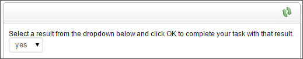

There are several ways to control task completion via email, each of which prompts different responses in Process Director.
There are three types of email links that can be inserted into the email template for completion of a task, each of which direct users to a completion form in Process Director, and not to the original Form:
All of the completion links do essentially the same thing, that is, they direct the user to a task completion page, bypassing the original Form. They each have a slightly different implementation on the email template, however.
The Email Result Links provide the user with a list of all of the possible results for a task, while the Email Completion Link provides a result link for a single possible result. So, if you want the user to see all of the possible task results, you'd use the Email Result Links, while if you only want to show a result for one or two possible results, you'd configure an Email Completion Link for each of the results you desire to show the user.
As an example, let's say that you have three possible results for a Process Timeline Activity: Approve, Reject, and Resubmit. For some users, you might want to show the Email Result Links to display all of the possible results:
{EMAIL_RESULT_LINKS, comments=1, confirm=1, separator=" | ", icon=1}
In this example, the Email Result Links control tag is configured to require comments (comments=1), require a confirmation dialog for the result (confirm=1), insert a spaced bar character between each result (separator=" | "), and display the icons for each result that was configured in the Process Timeline Activity (icon=1).
For another user, you might only wish to show the Approve or Resubmit results but not the Reject result:
{EmailCompleteLink, text=APPROVE, comments=false, confirm=true, action=APPROVED}
{EmailCompleteLink, text=RESUBMIT, comments=true, confirm=true, action=RESUBMIT}
In this example, the Email Complete Links are configured to specify the text to display for the result (text=APPROVE), require comments for the Resubmit result (comments=true), require a confirmation dialog for the results (confirm=true), and specifies the task result, or action, for each result (action=RESUBMIT).
The Email Complete URL control tag, at its simplest, provides a link to the task completion page.
{EMAIL_COMPLETE_URL}
In this example, the user is provided with a link to the completion page, but, since it has no indication of what the result should be, the completion page will present the user with a dropdown control that displays all of the possible results.

It is possible, however, to fully configure the Email Complete URL control tag, so that it acts just like an Email Complete Link control:
{EMAIL_COMPLETE_URL, action=Approve, comments=1, confirm=1}
Using any of the three completion links work best if the process participant doesn’t need to edit any information on the Form, and the only action is to provide a result. If you do wish the user to go to the Form to edit or add information, then you can't use the result links.
Allowing a task to be completed from email is called offline completion. Offline completion enables processes to parse an email message, and, based on the contents of the email, complete a task. For offline completion of an Activity to work, two portions of the Process Timeline Activity must be properly configured. First, in the Advanced Options tab of the Process Timeline Activity, you must select the Allow task to be completed from email option.
As a default, Process Director will search the email message for the text of the configured result. You can add additional strings to search for to meet the result by using the Optional list of strings for email complete property to enter a text string or comma-separated list of strings that, if found, also constitute a valid result.

In the example shown in Figure 13, in addition to the "Yes" result itself, the result is also configured to accept "yeah", "sure", or "ok" as a valid "Yes" result for the Activity. Any email that contains these optional text strings instead of "Yes" will still complete properly.
Once the Process Timeline Activity has been configured, you must add an E-mail Action Custom Task to the Process Timeline. When properly configured, the Custom Task will parse the email messages in a specified email inbox for the appropriate result, or send an email to the user for unparsable or ambiguous emails, to prompt the user to resend the completion email.
Finally, the Email Data control that you place on the email notification template must use, as the Reply To address, the email address for the email inbox that the Custom Task uses to parse emails. When the user replies to the notification email, the message will be routed to the proper email inbox, so that the Custom Task can parse it.
Offline completion generally uses the bpImportEmail utility to retrieve emails for parsing.